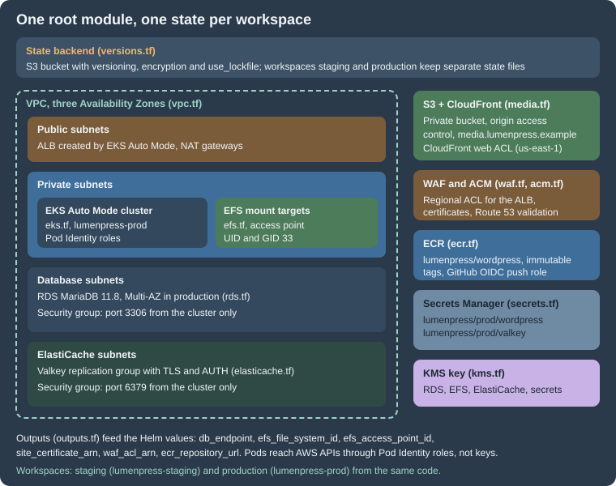

EKS Infrastructure with OpenTofu
|
This content was generated with the assistance of AI and should be verified against the official documentation before being relied on in production. |
This page was written against OpenTofu 1.12.6, the AWS provider 6.71 (constraint ~> 6.70), the terraform-aws-modules
registry modules at the versions pinned in the listings (vpc 6.7.3, eks 21.29.0, rds 7.2.2, efs 2.2.1, s3-bucket 5.17.0,
cloudfront 6.7.1, ecr 3.2.1, kms 4.2.2), WordPress 7.1.3 as the site baseline (7.1.4, the security release of
2026-10-28, is the version to run), Kubernetes 1.36 on Amazon EKS (1.37 has been available on EKS since 2026-10-01) and
MariaDB 11.8, and checked on 2026-10-29. The complete configuration below was validated with tofu init -backend=false
followed by tofu validate in a scratch directory, once for each workspace, and formatted with tofu fmt. It was never
planned or applied: no AWS credentials were used to write this page, so resource arguments are checked against the
provider and module schemas, not against a live account.
The page builds the infrastructure that the other pages of this section run on: the architecture is on Cloud Reference Architecture, the database on Managed Database: RDS and Aurora, the media paths on Media: S3 Offload, EFS and CloudFront, the cache on Object Cache, Sessions and Cron in a Cluster, and the workload on Deploying on EKS with Helm. OpenTofu itself, VPC design and EKS creation are not re-explained here; see Infrastructure as Code on AWS, VPC Networking, EKS Clusters, RDS, Block and File Storage on AWS, S3, CloudFront, Secrets Manager and KMS and Route 53 and Certificates.
What the configuration builds

One root module in a directory named infra/ creates one complete environment. The same code creates staging
(lumenpress-staging) and production (lumenpress-prod) because the environment is chosen by the OpenTofu workspace.
The files are split by service so that a change to the cache does not touch a review of the network:
| File | Contents |
|---|---|
|
OpenTofu and provider constraints, the S3 backend, the default provider and a |
|
Inputs, and the per-workspace settings (sizes, CIDR, host names) in one map |
|
VPC with public, private, database and ElastiCache subnets in three AZs, NAT gateways, an S3 gateway endpoint |
|
One customer-managed key for RDS, EFS, ElastiCache and Secrets Manager |
|
EKS Auto Mode cluster, add-ons, access entry for the creator, Pod Identity roles for the EFS driver, External Secrets Operator and the WordPress pods |
|
RDS for MariaDB 11.8 with a managed master password, parameter group and a security group |
|
EFS file system, mount targets and an access point for uploads |
|
ElastiCache for Valkey replication group with TLS, AUTH and an eviction policy |
|
The private S3 media bucket, the CloudFront distribution with origin access control, the DNS alias |
|
The ECR repository and the GitHub OIDC role that pushes images |
|
The Secrets Manager secret containers |
|
Certificates with DNS validation, the regional and the CloudFront web ACLs |
|
The values the Helm chart needs |
Decisions behind the layout
-
Public registry modules for the commodity parts, plain resources for the rest. The VPC, EKS, RDS, EFS, S3, CloudFront, ECR and KMS modules of
terraform-aws-modulesencode years of defaults, so the configuration stays short. Their inputs change between major versions, so each module is pinned to an exact version and the pins are upgraded deliberately. ElastiCache, WAF, ACM and the IAM roles are plain resources: they are small, and the exact arguments matter for the security of the platform. -
EKS Auto Mode.
compute_configwith thegeneral-purposenode pool hands node provisioning, patching, scaling and the load balancing integration to EKS. WordPress pods are stateless and small, which suits it. The alternative is managed node groups plus Karpenter, which is more work and gives control of instance types and Spot; both are compared on EKS Clusters. Switching later is a change to this file and a node migration, not a new cluster. -
RDS for MariaDB, not Aurora. A single writer with Multi-AZ is the right size for most WordPress sites. Aurora MySQL becomes interesting with many readers or a need for fast failover and storage growth; the comparison and the Aurora version of this resource are on Managed Database: RDS and Aurora.
-
Pod Identity, not IRSA and not keys. Roles are attached to service accounts through
aws_eks_pod_identity_association, with thepods.eks.amazonaws.comtrust policy. The add-oneks-pod-identity-agentis declared before compute so that nodes have it from the first boot. -
Secrets are containers here, values elsewhere. OpenTofu creates the Secrets Manager secrets, and a script writes the salts and the application password, so those never appear in a file or a plan. See Secrets and the state file.
-
The load balancer is not created here. With Auto Mode the ALB is created by EKS when the Helm chart’s Ingress is applied. OpenTofu provides what the Ingress needs: the certificate, the WAF web ACL, subnet tags and the security group rules.
The state backend
OpenTofu records what it created in a state file. A team needs that file in shared, encrypted, locked storage. For AWS
that is an S3 bucket. OpenTofu 1.10 and later lock the state with a lock file in the same bucket (use_lockfile), so no
DynamoDB table is needed. The bucket is created once, by hand or with a tiny configuration that keeps a local state
file, because the backend cannot create itself:
terraform {
required_version = ">= 1.11.0"
required_providers {
aws = {
source = "hashicorp/aws"
version = "~> 6.70"
}
}
}
provider "aws" {
region = "eu-west-1"
}
# Created once, with a local state file, by a person with administrator access.
resource "aws_s3_bucket" "state" {
bucket = "lumenpress-tfstate-123456789012"
}
resource "aws_s3_bucket_versioning" "state" {
bucket = aws_s3_bucket.state.id
versioning_configuration {
status = "Enabled"
}
}
resource "aws_s3_bucket_server_side_encryption_configuration" "state" {
bucket = aws_s3_bucket.state.id
rule {
apply_server_side_encryption_by_default {
sse_algorithm = "AES256"
}
}
}
resource "aws_s3_bucket_public_access_block" "state" {
bucket = aws_s3_bucket.state.id
block_public_acls = true
block_public_policy = true
ignore_public_acls = true
restrict_public_buckets = true
}
data "aws_iam_policy_document" "tls_only" {
statement {
sid = "DenyInsecureTransport"
effect = "Deny"
actions = ["s3:*"]
resources = [aws_s3_bucket.state.arn, "${aws_s3_bucket.state.arn}/*"]
principals {
type = "*"
identifiers = ["*"]
}
condition {
test = "Bool"
variable = "aws:SecureTransport"
values = ["false"]
}
}
}
resource "aws_s3_bucket_policy" "state" {
bucket = aws_s3_bucket.state.id
policy = data.aws_iam_policy_document.tls_only.json
}The bucket has versioning, so a bad state write can be rolled back, server-side encryption, a public access block and a policy that denies plain HTTP. The bucket name contains the account ID because S3 bucket names are global. Access to the bucket is access to every secret in the state (see Secrets and the state file), so it is limited to the identities that run OpenTofu.
The backend block in versions.tf is a partial configuration: it sets the key, the region, encryption and the lock
file, and leaves the bucket name to -backend-config, so the same code works in any account.
Workspaces for staging and production
A workspace is a named state inside one backend. With the S3 backend the state of workspace production is the object
workspaces/production/wordpress/lumenpress.tfstate, the one of staging is next to it
(workspace_key_prefix is the first part of that key). locals.tf maps the workspace name to the settings of the
environment and refuses unknown names, including default, which prevents an accidental third environment:
data "aws_caller_identity" "current" {}
data "aws_availability_zones" "available" {
state = "available"
}
locals {
# One workspace per environment. "default" is deliberately not a key, so a plan
# in the default workspace fails instead of creating a third environment.
environments = {
staging = {
env = "staging"
site_host = "staging.lumenpress.example"
media_host = "staging-media.lumenpress.example"
vpc_cidr = "10.20.0.0/16"
single_nat = true
kubernetes_version = "1.36"
db_instance_class = "db.t4g.medium"
db_multi_az = false
db_allocated_gb = 50
db_deletion_protect = false
valkey_node_type = "cache.t4g.small"
valkey_replicas = 1
}
production = {
env = "prod"
site_host = "www.lumenpress.example"
media_host = "media.lumenpress.example"
vpc_cidr = "10.10.0.0/16"
single_nat = false
kubernetes_version = "1.36"
db_instance_class = "db.r7g.large"
db_multi_az = true
db_allocated_gb = 200
db_deletion_protect = true
valkey_node_type = "cache.r7g.large"
valkey_replicas = 2
}
}
cfg = local.environments[terraform.workspace]
env = local.cfg.env
name = "lumenpress-${local.env}"
azs = slice(data.aws_availability_zones.available.names, 0, 3)
# Secrets Manager names follow lumenpress/<env>/<purpose>.
secret_prefix = "lumenpress/${local.env}"
}Staging uses a single NAT gateway, a small non-Multi-AZ database and one cache replica. Production has a NAT gateway per Availability Zone, Multi-AZ RDS, deletion protection and two cache replicas. The Kubernetes version is the same in both, because a version that production has not seen should not be the first thing staging proves. Staging is an independent copy: it has its own cluster, database and cache.
The honest limits of workspaces: both environments share one backend and one provider configuration, so one set of
credentials can change both, and a command run in the wrong workspace is easy. The common reasons to prefer separate AWS
accounts with the same code are blast radius and permissions. In that case each account has its own backend and its own
role, and the workspace map in locals.tf collapses to a single entry; the module itself does not change. Whatever you
choose, make the workspace visible: tofu workspace show before every plan, and a CI job that sets TF_WORKSPACE
explicitly.
The files
Providers and backend
terraform {
required_version = ">= 1.11.0"
required_providers {
aws = {
source = "hashicorp/aws"
version = "~> 6.70"
}
random = {
source = "hashicorp/random"
version = "~> 3.7"
}
}
# Partial configuration: the bucket is passed with -backend-config so that the
# same code can be initialised for any account (see "State backend").
backend "s3" {
key = "wordpress/lumenpress.tfstate"
workspace_key_prefix = "workspaces"
region = "eu-west-1"
encrypt = true
use_lockfile = true
}
}
provider "aws" {
region = var.region
default_tags {
tags = {
Project = "lumenpress"
Environment = local.env
ManagedBy = "opentofu"
}
}
}
# CloudFront certificates and CLOUDFRONT-scoped WAF web ACLs live in us-east-1.
provider "aws" {
alias = "us_east_1"
region = "us-east-1"
default_tags {
tags = {
Project = "lumenpress"
Environment = local.env
ManagedBy = "opentofu"
}
}
}default_tags stamps every taggable resource with the project, environment and ManagedBy tag, which is what cost
reports and tag-based IAM conditions rely on. The second provider block has the alias us_east_1 because CloudFront
reads its certificate from that region and a CloudFront-scoped WAF web ACL can only be created there.
Inputs
variable "region" {
description = "Region of the cluster and of every regional resource."
type = string
default = "eu-west-1"
}
variable "root_domain" {
description = "Public Route 53 hosted zone that already exists."
type = string
default = "lumenpress.example"
}
variable "admin_cidrs" {
description = "CIDR blocks allowed to reach the public Kubernetes API endpoint."
type = list(string)
default = ["203.0.113.0/24"]
}
variable "github_repository" {
description = "Repository whose workflows may push images to ECR (OIDC subject)."
type = string
default = "lumenpress/wordpress-site"
}admin_cidrs is the list of networks allowed to reach the public Kubernetes API endpoint; the documentation address
range shown is a placeholder. A private-only endpoint with access from a VPN or a bastion is stricter, and is the
better choice when the pipeline runs inside the VPC.
Network
module "vpc" {
source = "terraform-aws-modules/vpc/aws"
version = "6.7.3"
name = local.name
cidr = local.cfg.vpc_cidr
azs = local.azs
public_subnets = [for i in range(3) : cidrsubnet(local.cfg.vpc_cidr, 8, i)]
private_subnets = [for i in range(3) : cidrsubnet(local.cfg.vpc_cidr, 4, i + 1)]
database_subnets = [for i in range(3) : cidrsubnet(local.cfg.vpc_cidr, 8, i + 100)]
elasticache_subnets = [for i in range(3) : cidrsubnet(local.cfg.vpc_cidr, 8, i + 110)]
create_database_subnet_group = true
create_elasticache_subnet_group = true
enable_nat_gateway = true
single_nat_gateway = local.cfg.single_nat
one_nat_gateway_per_az = !local.cfg.single_nat
# The load balancer integration finds subnets through these tags.
public_subnet_tags = { "kubernetes.io/role/elb" = 1 }
private_subnet_tags = { "kubernetes.io/role/internal-elb" = 1 }
}
# Gateway endpoint: S3 traffic from the pods (media, ECR layers) skips the NAT gateway.
resource "aws_vpc_endpoint" "s3" {
vpc_id = module.vpc.vpc_id
service_name = "com.amazonaws.${var.region}.s3"
vpc_endpoint_type = "Gateway"
route_table_ids = module.vpc.private_route_table_ids
}The address plan cuts the VPC CIDR into three /20 private subnets (the pods of the VPC CNI take their addresses from
them, so they are generous), three /24 public subnets and small /24 subnets for the database and the cache, which
the module wraps in subnet groups. The subnet tags are how EKS Auto Mode finds where to place load balancers. The S3
gateway endpoint is free and keeps traffic to S3 (media and image layers) off the NAT gateways.
Encryption key
module "kms" {
source = "terraform-aws-modules/kms/aws"
version = "4.2.2"
description = "${local.name}: Secrets Manager, RDS, EFS and ElastiCache"
aliases = ["lumenpress/${local.env}"]
enable_key_rotation = true
}One key with rotation covers RDS storage and its managed master secret, EFS, ElastiCache and the Secrets Manager secrets. Separate keys per service allow separate access policies, at the cost of more objects; with one key, the IAM policy of each role decides who may use it.
The cluster and its identities
module "eks" {
source = "terraform-aws-modules/eks/aws"
version = "21.29.0"
name = local.name
kubernetes_version = local.cfg.kubernetes_version
vpc_id = module.vpc.vpc_id
subnet_ids = module.vpc.private_subnets
control_plane_subnet_ids = module.vpc.private_subnets
endpoint_public_access = true
endpoint_public_access_cidrs = var.admin_cidrs
endpoint_private_access = true
# Access entries only; the identity that runs OpenTofu becomes cluster admin.
enable_cluster_creator_admin_permissions = true
# EKS Auto Mode: EKS runs Karpenter-based node scaling, the block storage
# driver and the load balancing integration for us.
compute_config = {
enabled = true
node_pools = ["general-purpose"]
}
addons = {
eks-pod-identity-agent = {
before_compute = true
}
aws-efs-csi-driver = {
pod_identity_association = [{
role_arn = aws_iam_role.efs_csi.arn
service_account = "efs-csi-controller-sa"
}]
}
}
}
# ---- Pod Identity roles ---------------------------------------------------------
data "aws_iam_policy_document" "pods_trust" {
statement {
actions = ["sts:AssumeRole", "sts:TagSession"]
principals {
type = "Service"
identifiers = ["pods.eks.amazonaws.com"]
}
}
}
# EFS CSI driver controller.
resource "aws_iam_role" "efs_csi" {
name = "${local.name}-efs-csi"
assume_role_policy = data.aws_iam_policy_document.pods_trust.json
}
resource "aws_iam_role_policy_attachment" "efs_csi" {
role = aws_iam_role.efs_csi.name
policy_arn = "arn:aws:iam::aws:policy/service-role/AmazonEFSCSIDriverPolicy"
}
# External Secrets Operator: read only the secrets of this environment.
data "aws_iam_policy_document" "external_secrets" {
statement {
actions = ["secretsmanager:GetSecretValue", "secretsmanager:DescribeSecret"]
resources = ["arn:aws:secretsmanager:${var.region}:${data.aws_caller_identity.current.account_id}:secret:${local.secret_prefix}/*"]
}
statement {
actions = ["kms:Decrypt"]
resources = [module.kms.key_arn]
}
}
resource "aws_iam_role" "external_secrets" {
name = "${local.name}-external-secrets"
assume_role_policy = data.aws_iam_policy_document.pods_trust.json
}
resource "aws_iam_role_policy" "external_secrets" {
role = aws_iam_role.external_secrets.id
policy = data.aws_iam_policy_document.external_secrets.json
}
resource "aws_eks_pod_identity_association" "external_secrets" {
cluster_name = module.eks.cluster_name
namespace = "external-secrets"
service_account = "external-secrets"
role_arn = aws_iam_role.external_secrets.arn
}
# The WordPress pods themselves: write access to the media bucket, used by an
# offload plugin when Lumen Press chooses S3 over EFS (see the media page).
data "aws_iam_policy_document" "wordpress" {
statement {
actions = ["s3:GetObject", "s3:PutObject", "s3:DeleteObject", "s3:PutObjectAcl"]
resources = ["${module.media_bucket.s3_bucket_arn}/*"]
}
statement {
actions = ["s3:ListBucket", "s3:GetBucketLocation"]
resources = [module.media_bucket.s3_bucket_arn]
}
}
resource "aws_iam_role" "wordpress" {
name = "${local.name}-wordpress"
assume_role_policy = data.aws_iam_policy_document.pods_trust.json
}
resource "aws_iam_role_policy" "wordpress" {
role = aws_iam_role.wordpress.id
policy = data.aws_iam_policy_document.wordpress.json
}
resource "aws_eks_pod_identity_association" "wordpress" {
cluster_name = module.eks.cluster_name
namespace = "lumenpress"
service_account = "lumenpress-wordpress"
role_arn = aws_iam_role.wordpress.arn
}Points that are easy to get wrong:
-
endpoint_public_access_cidrsrestricts the public endpoint;endpoint_private_accesslets the nodes and in-VPC tools reach the API privately. -
enable_cluster_creator_admin_permissionscreates an access entry for whoever runstofu apply. Add access entries for the people and the deployment role (see the releases page) instead of sharing that identity. -
EKS Auto Mode includes the block storage driver, the load balancing integration and the Pod networking, but not the EFS CSI driver, which is an EKS add-on declared here with its own Pod Identity role. The role uses the AWS managed policy for the driver.
-
The External Secrets Operator role can read only
lumenpress/<env>/*and decrypt with the environment key. The association names the namespace and service account of the operator’s default Helm installation. -
The WordPress role is only needed with an S3 offload plugin; with EFS it grants nothing that is used. Its association names the service account
lumenpress-wordpressin the namespacelumenpress, the same names the Helm chart uses.
Database
resource "aws_security_group" "db" {
name_prefix = "${local.name}-db-"
description = "MariaDB from the cluster nodes"
vpc_id = module.vpc.vpc_id
lifecycle {
create_before_destroy = true
}
}
resource "aws_vpc_security_group_ingress_rule" "db_from_cluster" {
security_group_id = aws_security_group.db.id
referenced_security_group_id = module.eks.cluster_primary_security_group_id
from_port = 3306
to_port = 3306
ip_protocol = "tcp"
description = "MariaDB from pods on EKS nodes"
}
module "db" {
source = "terraform-aws-modules/rds/aws"
version = "7.2.2"
identifier = local.name
engine = "mariadb"
engine_version = "11.8"
family = "mariadb11.8"
major_engine_version = "11.8"
instance_class = local.cfg.db_instance_class
allocated_storage = local.cfg.db_allocated_gb
max_allocated_storage = local.cfg.db_allocated_gb * 4
storage_type = "gp3"
storage_encrypted = true
kms_key_id = module.kms.key_arn
db_name = "lumenpress"
username = "wp_admin"
port = 3306
# RDS creates and rotates the master password in Secrets Manager. The
# application users wp_app and wp_migrate are created by the bootstrap script.
manage_master_user_password = true
master_user_secret_kms_key_id = module.kms.key_arn
multi_az = local.cfg.db_multi_az
db_subnet_group_name = module.vpc.database_subnet_group_name
vpc_security_group_ids = [aws_security_group.db.id]
publicly_accessible = false
backup_retention_period = 14
backup_window = "02:00-03:00"
maintenance_window = "Mon:03:30-Mon:04:30"
copy_tags_to_snapshot = true
deletion_protection = local.cfg.db_deletion_protect
skip_final_snapshot = !local.cfg.db_deletion_protect
auto_minor_version_upgrade = true
enabled_cloudwatch_logs_exports = ["error", "slowquery"]
parameters = [
{ name = "character_set_server", value = "utf8mb4" },
{ name = "collation_server", value = "utf8mb4_unicode_520_ci" },
{ name = "slow_query_log", value = "1" },
{ name = "long_query_time", value = "1" },
{ name = "max_connections", value = "400", apply_method = "pending-reboot" },
]
}manage_master_user_password makes RDS create the master password in Secrets Manager and rotate it, so no password is in
the state or the code. The master user is only for administration: the application connects as wp_app and the
migration Job as wp_migrate, users that are created after the first apply with the grants described on
Managed Database: RDS and Aurora. The parameter group sets
utf8mb4 with a WordPress-compatible collation and turns on the slow query log, which enabled_cloudwatch_logs_exports
ships to CloudWatch. MariaDB 11.8 on RDS requires TLS by default from 11.8.3, so the application must connect with TLS
(MYSQL_CLIENT_FLAGS in wp-config.php). max_connections must leave room for pods x pm.max_children, with the
numbers worked out on the database page.
File storage for uploads
resource "aws_security_group" "efs" {
name_prefix = "${local.name}-efs-"
description = "NFS from the cluster nodes"
vpc_id = module.vpc.vpc_id
lifecycle {
create_before_destroy = true
}
}
resource "aws_vpc_security_group_ingress_rule" "efs_from_cluster" {
security_group_id = aws_security_group.efs.id
referenced_security_group_id = module.eks.cluster_primary_security_group_id
from_port = 2049
to_port = 2049
ip_protocol = "tcp"
description = "NFS from pods on EKS nodes"
}
module "efs" {
source = "terraform-aws-modules/efs/aws"
version = "2.2.1"
name = "${local.name}-uploads"
encrypted = true
kms_key_arn = module.kms.key_arn
performance_mode = "generalPurpose"
throughput_mode = "elastic"
mount_targets = {
for i, subnet_id in module.vpc.private_subnets : "az${i}" => {
subnet_id = subnet_id
security_groups = [aws_security_group.efs.id]
}
}
# Uploads only: the access point pins the owner to www-data (UID 33).
access_points = {
uploads = {
name = "uploads"
posix_user = {
uid = 33
gid = 33
}
root_directory = {
path = "/uploads"
creation_info = {
owner_uid = 33
owner_gid = 33
permissions = "0755"
}
}
}
}
enable_backup_policy = true
}The access point is the important part: it makes every client appear as UID and GID 33 (www-data) and creates
/uploads with that owner, so the pods need no root and no fsGroup tricks. EFS holds uploads only. Code and plugins
never go on EFS: they are in the image, and PHP files on a network file system are slow and a way for an upload
vulnerability to become code execution. The mount targets are in the private subnets, one per zone, protected by the
security group that accepts NFS from the cluster’s security group only.
The object cache
resource "aws_security_group" "valkey" {
name_prefix = "${local.name}-valkey-"
description = "Valkey from the cluster nodes"
vpc_id = module.vpc.vpc_id
lifecycle {
create_before_destroy = true
}
}
resource "aws_vpc_security_group_ingress_rule" "valkey_from_cluster" {
security_group_id = aws_security_group.valkey.id
referenced_security_group_id = module.eks.cluster_primary_security_group_id
from_port = 6379
to_port = 6379
ip_protocol = "tcp"
description = "Valkey (TLS) from pods on EKS nodes"
}
# AUTH token. It lands in the (encrypted) state; see "Secrets and state".
resource "random_password" "valkey" {
length = 48
special = false
}
resource "aws_elasticache_replication_group" "valkey" {
replication_group_id = local.name
description = "Object cache for ${local.name}"
engine = "valkey"
engine_version = "9.0"
node_type = local.cfg.valkey_node_type
port = 6379
# Cluster mode disabled: one primary and replicas, one endpoint pair.
num_cache_clusters = local.cfg.valkey_replicas + 1
automatic_failover_enabled = true
multi_az_enabled = true
subnet_group_name = module.vpc.elasticache_subnet_group_name
security_group_ids = [aws_security_group.valkey.id]
at_rest_encryption_enabled = true
kms_key_id = module.kms.key_arn
transit_encryption_enabled = true
auth_token = random_password.valkey.result
# allkeys-lru: a cache evicts instead of refusing writes.
parameter_group_name = aws_elasticache_parameter_group.valkey.name
snapshot_retention_limit = 0
apply_immediately = false
}
resource "aws_elasticache_parameter_group" "valkey" {
name = "${local.name}-valkey9"
family = "valkey9"
description = "WordPress object cache"
parameter {
name = "maxmemory-policy"
value = "allkeys-lru"
}
}This is a replication group with cluster mode disabled, the valkey engine, TLS and an AUTH token, and Multi-AZ with
automatic failover. random_password generates the token; the value is in the (encrypted) state, see
Secrets and the state file. allkeys-lru in the parameter group is right for a cache. The engine version is a string such as
9.0; ElastiCache offers 8.2, 9.0 and 9.1 at the time of writing, so check the user guide before pinning one. How WordPress
uses the group is on
Object Cache, Sessions and Cron in a Cluster.
Media: S3 and CloudFront
module "media_bucket" {
source = "terraform-aws-modules/s3-bucket/aws"
version = "5.17.0"
bucket = "${local.name}-media"
block_public_acls = true
block_public_policy = true
ignore_public_acls = true
restrict_public_buckets = true
control_object_ownership = true
object_ownership = "BucketOwnerEnforced"
versioning = {
enabled = true
}
server_side_encryption_configuration = {
rule = {
apply_server_side_encryption_by_default = {
sse_algorithm = "AES256"
}
bucket_key_enabled = true
}
}
cors_rule = [{
allowed_methods = ["GET", "HEAD"]
allowed_origins = ["https://${local.cfg.site_host}"]
allowed_headers = ["*"]
max_age_seconds = 3600
}]
lifecycle_rule = [{
id = "expire-old-versions"
enabled = true
noncurrent_version_expiration = {
days = 90
}
}]
# CloudFront reads through origin access control; nothing else is public.
attach_policy = true
policy = data.aws_iam_policy_document.media_read.json
}
data "aws_iam_policy_document" "media_read" {
statement {
actions = ["s3:GetObject"]
resources = ["arn:aws:s3:::${local.name}-media/*"]
principals {
type = "Service"
identifiers = ["cloudfront.amazonaws.com"]
}
condition {
test = "StringEquals"
variable = "AWS:SourceArn"
values = [module.cdn.cloudfront_distribution_arn]
}
}
}
module "cdn" {
source = "terraform-aws-modules/cloudfront/aws"
version = "6.7.1"
aliases = [local.cfg.media_host]
comment = "${local.name} media"
enabled = true
http_version = "http2and3"
price_class = "PriceClass_100"
wait_for_deployment = false
web_acl_id = aws_wafv2_web_acl.cloudfront.arn
origin_access_control = {
media = {
description = "Media bucket"
origin_type = "s3"
signing_behavior = "always"
signing_protocol = "sigv4"
}
}
origin = {
media = {
domain_name = module.media_bucket.s3_bucket_bucket_regional_domain_name
origin_access_control_key = "media"
}
}
default_cache_behavior = {
target_origin_id = "media"
viewer_protocol_policy = "redirect-to-https"
allowed_methods = ["GET", "HEAD", "OPTIONS"]
cached_methods = ["GET", "HEAD"]
compress = true
# AWS managed policies: CachingOptimized and CORS-S3Origin.
cache_policy_id = "658327ea-f89d-4fab-a63d-7e88639e58f6"
origin_request_policy_id = "88a5eaf4-2fd4-4709-b370-b4c650ea3fcf"
}
viewer_certificate = {
acm_certificate_arn = aws_acm_certificate_validation.media.certificate_arn
ssl_support_method = "sni-only"
minimum_protocol_version = "TLSv1.2_2021"
}
}
data "aws_route53_zone" "root" {
name = var.root_domain
private_zone = false
}
resource "aws_route53_record" "media" {
zone_id = data.aws_route53_zone.root.zone_id
name = local.cfg.media_host
type = "A"
alias {
name = module.cdn.cloudfront_distribution_domain_name
zone_id = module.cdn.cloudfront_distribution_hosted_zone_id
evaluate_target_health = false
}
}The bucket is private. Only CloudFront can read it, through an origin access control, and the bucket policy’s
AWS:SourceArn condition pins that to this distribution. The distribution uses two AWS managed policies for caching and
for forwarding CORS headers; their IDs are fixed and documented. The certificate comes from acm.tf in us-east-1. The
WAF web ACL is attached by ARN, and the DNS alias points media.lumenpress.example at the distribution. Whether media
goes to S3 at all, or stays on EFS, is the decision of
Media: S3 Offload, EFS and CloudFront; the bucket costs nothing
while it is empty.
Image registry and the push role
module "ecr" {
source = "terraform-aws-modules/ecr/aws"
version = "3.2.1"
# Only created in the production workspace; staging pulls from the same repository.
create = terraform.workspace == "production"
repository_name = "lumenpress/wordpress"
repository_image_tag_mutability = "IMMUTABLE"
repository_image_scan_on_push = true
repository_lifecycle_policy = jsonencode({
rules = [{
rulePriority = 1
description = "Keep the last 50 images"
selection = {
tagStatus = "any"
countType = "imageCountMoreThan"
countNumber = 50
}
action = { type = "expire" }
}]
})
}
# GitHub Actions pushes images with OIDC (no long-lived keys); used on the releases page.
resource "aws_iam_openid_connect_provider" "github" {
count = terraform.workspace == "production" ? 1 : 0
url = "https://token.actions.githubusercontent.com"
client_id_list = ["sts.amazonaws.com"]
}
data "aws_iam_policy_document" "github_trust" {
count = terraform.workspace == "production" ? 1 : 0
statement {
actions = ["sts:AssumeRoleWithWebIdentity"]
principals {
type = "Federated"
identifiers = [aws_iam_openid_connect_provider.github[0].arn]
}
condition {
test = "StringEquals"
variable = "token.actions.githubusercontent.com:aud"
values = ["sts.amazonaws.com"]
}
condition {
test = "StringLike"
variable = "token.actions.githubusercontent.com:sub"
values = ["repo:${var.github_repository}:ref:refs/heads/main"]
}
}
}
resource "aws_iam_role" "github_ecr_push" {
count = terraform.workspace == "production" ? 1 : 0
name = "lumenpress-github-ecr-push"
assume_role_policy = data.aws_iam_policy_document.github_trust[0].json
}
data "aws_iam_policy_document" "ecr_push" {
count = terraform.workspace == "production" ? 1 : 0
statement {
actions = ["ecr:GetAuthorizationToken"]
resources = ["*"]
}
statement {
actions = [
"ecr:BatchCheckLayerAvailability", "ecr:InitiateLayerUpload", "ecr:UploadLayerPart",
"ecr:CompleteLayerUpload", "ecr:PutImage", "ecr:BatchGetImage", "ecr:GetDownloadUrlForLayer",
]
resources = [module.ecr.repository_arn]
}
}
resource "aws_iam_role_policy" "ecr_push" {
count = terraform.workspace == "production" ? 1 : 0
role = aws_iam_role.github_ecr_push[0].id
policy = data.aws_iam_policy_document.ecr_push[0].json
}Tags are immutable, so a <git-sha> can never be overwritten by a later build, and scan on push is on. The registry is
created only in the production workspace: staging pulls the same image from the same repository, which is what makes
"promote the image" mean something. The OIDC provider and role let GitHub Actions push without long-lived keys; the trust
policy is restricted to the main branch of one repository. The release workflow that uses it is on
Releases, Upgrades and Autoscaling on Kubernetes.
Secrets
# The secret objects only; values are written by scripts/seed-secrets.sh so that
# salts and passwords never appear in the OpenTofu configuration.
resource "aws_secretsmanager_secret" "wordpress" {
name = "${local.secret_prefix}/wordpress"
description = "DB_PASSWORD and the eight authentication keys and salts"
kms_key_id = module.kms.key_arn
recovery_window_in_days = local.env == "prod" ? 30 : 0
}
resource "aws_secretsmanager_secret" "valkey" {
name = "${local.secret_prefix}/valkey"
description = "AUTH token of the ElastiCache for Valkey replication group"
kms_key_id = module.kms.key_arn
recovery_window_in_days = local.env == "prod" ? 30 : 0
}
resource "aws_secretsmanager_secret_version" "valkey" {
secret_id = aws_secretsmanager_secret.valkey.id
secret_string = jsonencode({
VALKEY_HOST = aws_elasticache_replication_group.valkey.primary_endpoint_address
VALKEY_AUTH = random_password.valkey.result
VALKEY_PORT = "6379"
VALKEY_SCHEME = "tls"
})
}The Valkey secret receives its value from OpenTofu because the AUTH token already exists in the state. The WordPress secret is a container: the script in Seeding the application secret fills it. Production keeps deleted secrets recoverable for thirty days, staging deletes them at once so that a destroyed environment can be recreated under the same names.
Certificates and DNS validation
# Regional certificate for the load balancer (eu-west-1).
resource "aws_acm_certificate" "site" {
domain_name = local.cfg.site_host
validation_method = "DNS"
# The apex redirects to www in production; staging has a single name.
subject_alternative_names = local.env == "prod" ? [var.root_domain] : []
lifecycle {
create_before_destroy = true
}
}
resource "aws_route53_record" "site_validation" {
for_each = {
for o in aws_acm_certificate.site.domain_validation_options : o.domain_name => {
name = o.resource_record_name
type = o.resource_record_type
record = o.resource_record_value
}
}
zone_id = data.aws_route53_zone.root.zone_id
name = each.value.name
type = each.value.type
records = [each.value.record]
ttl = 60
allow_overwrite = true
}
resource "aws_acm_certificate_validation" "site" {
certificate_arn = aws_acm_certificate.site.arn
validation_record_fqdns = [for r in aws_route53_record.site_validation : r.fqdn]
}
# CloudFront certificate: must be in us-east-1.
resource "aws_acm_certificate" "media" {
provider = aws.us_east_1
domain_name = local.cfg.media_host
validation_method = "DNS"
lifecycle {
create_before_destroy = true
}
}
resource "aws_route53_record" "media_validation" {
for_each = {
for o in aws_acm_certificate.media.domain_validation_options : o.domain_name => {
name = o.resource_record_name
type = o.resource_record_type
record = o.resource_record_value
}
}
zone_id = data.aws_route53_zone.root.zone_id
name = each.value.name
type = each.value.type
records = [each.value.record]
ttl = 60
allow_overwrite = true
}
resource "aws_acm_certificate_validation" "media" {
provider = aws.us_east_1
certificate_arn = aws_acm_certificate.media.arn
validation_record_fqdns = [for r in aws_route53_record.media_validation : r.fqdn]
}aws_acm_certificate_validation waits until the certificate is issued, so an apply fails after the provider timeout when
the hosted zone does not exist or is not delegated. The Route 53 zone is a data source: the zone and its registrar
delegation are not part of this configuration. See Route 53 and
Certificates.
Web ACLs
locals {
waf_rules = [
{ name = "AWSManagedRulesCommonRuleSet", priority = 10 },
{ name = "AWSManagedRulesKnownBadInputsRuleSet", priority = 20 },
{ name = "AWSManagedRulesSQLiRuleSet", priority = 30 },
{ name = "AWSManagedRulesPHPRuleSet", priority = 40 },
]
}
# Regional web ACL, attached to the ALB by the Ingress annotation wafv2-acl-arn.
resource "aws_wafv2_web_acl" "alb" {
name = "${local.name}-alb"
scope = "REGIONAL"
default_action {
allow {}
}
rule {
name = "login-rate-limit"
priority = 1
action {
block {}
}
statement {
rate_based_statement {
limit = 100
aggregate_key_type = "IP"
scope_down_statement {
byte_match_statement {
search_string = "/wp-login.php"
positional_constraint = "STARTS_WITH"
field_to_match {
uri_path {}
}
text_transformation {
priority = 0
type = "NONE"
}
}
}
}
}
visibility_config {
cloudwatch_metrics_enabled = true
metric_name = "login-rate-limit"
sampled_requests_enabled = true
}
}
dynamic "rule" {
for_each = local.waf_rules
content {
name = rule.value.name
priority = rule.value.priority
override_action {
none {}
}
statement {
managed_rule_group_statement {
name = rule.value.name
vendor_name = "AWS"
}
}
visibility_config {
cloudwatch_metrics_enabled = true
metric_name = rule.value.name
sampled_requests_enabled = true
}
}
}
visibility_config {
cloudwatch_metrics_enabled = true
metric_name = "${local.name}-alb"
sampled_requests_enabled = true
}
}
# CloudFront web ACL (scope CLOUDFRONT exists only in us-east-1).
resource "aws_wafv2_web_acl" "cloudfront" {
provider = aws.us_east_1
name = "${local.name}-media"
scope = "CLOUDFRONT"
default_action {
allow {}
}
rule {
name = "AWSManagedRulesAmazonIpReputationList"
priority = 10
override_action {
none {}
}
statement {
managed_rule_group_statement {
name = "AWSManagedRulesAmazonIpReputationList"
vendor_name = "AWS"
}
}
visibility_config {
cloudwatch_metrics_enabled = true
metric_name = "ip-reputation"
sampled_requests_enabled = true
}
}
visibility_config {
cloudwatch_metrics_enabled = true
metric_name = "${local.name}-media"
sampled_requests_enabled = true
}
}Source: AWS WAF: Managed rule groups
The regional ACL protects the load balancer: a rate limit for /wp-login.php and four AWS managed rule groups (common
rules, known bad inputs, SQL injection and PHP). Managed rule groups can block legitimate WordPress requests, for
example some REST API and block-editor payloads trigger the common rule set, so start them in count mode
(override_action { count {} }), review the sampled requests and then enforce. The CloudFront ACL uses only the IP
reputation list; media is static. The ACL is attached to the ALB with the annotation alb.ingress.kubernetes.io/wafv2-acl-arn
on the Ingress of the Helm chart. Rule tuning and operations are on the releases and operations pages.
Outputs
output "cluster_name" {
value = module.eks.cluster_name
}
output "db_endpoint" {
description = "Goes into the Helm value database.host."
value = module.db.db_instance_address
}
output "db_master_secret_arn" {
value = module.db.db_instance_master_user_secret_arn
}
output "efs_file_system_id" {
description = "Goes into the Helm value uploads.efs.fileSystemId."
value = module.efs.id
}
output "efs_access_point_id" {
value = module.efs.access_points["uploads"].id
}
output "valkey_primary_endpoint" {
value = aws_elasticache_replication_group.valkey.primary_endpoint_address
}
output "site_certificate_arn" {
description = "Goes into the Ingress annotation or IngressClassParams."
value = aws_acm_certificate_validation.site.certificate_arn
}
output "waf_acl_arn" {
value = aws_wafv2_web_acl.alb.arn
}
output "media_bucket" {
value = module.media_bucket.s3_bucket_id
}
output "ecr_repository_url" {
value = module.ecr.repository_url
}These are the values that helm upgrade --install consumes: the database endpoint, the EFS file system and access point
IDs, the certificate and WAF ARNs and the image repository. Nothing here is secret.
Secrets and the state file
The state contains every attribute of every resource, including the AUTH token that random_password generated and the
secret string that aws_secretsmanager_secret_version.valkey stores. Anyone who can read the state can read those
values. The mitigations in this configuration:
-
the state bucket is private, encrypted, versioned and limited to the identities that run OpenTofu;
-
the RDS master password is created by RDS (
manage_master_user_password) and never passes through OpenTofu; -
the WordPress salts and the application database password are never in OpenTofu at all (see Seeding the application secret);
-
the Valkey token is in the state by design, and is rotated by changing the
random_passwordresource (tofu apply -replace=random_password.valkey) followed by a rolling restart of the pods.
OpenTofu 1.11 also supports ephemeral resources and write-only arguments, which keep values out of the state; whether the resource you need accepts a write-only argument is a provider matter, so check the provider documentation before relying on it. For the Valkey token the simplest alternative is ElastiCache users and user groups with IAM authentication, which removes the token altogether.
Seeding the application secret
After the first apply, one script writes the database password and the eight authentication keys and salts into
lumenpress/<env>/wordpress. It generates them with openssl, builds the JSON with jq, refuses to overwrite an existing
value (rotating the salts logs every user out) and prints nothing secret. The script passed shellcheck and bash -n:
#!/usr/bin/env bash
# Writes DB_PASSWORD and the eight keys and salts into lumenpress/<env>/wordpress.
# Run once per environment by a person with secretsmanager:PutSecretValue; the
# values are generated here, never printed and never stored in a file.
set -euo pipefail
env="${1:?usage: seed-secrets.sh <staging|prod>}"
secret_id="lumenpress/${env}/wordpress"
gen() { openssl rand -base64 48 | tr -d '\n'; }
payload="$(
jq -n \
--arg db_password "$(gen)" \
--arg auth_key "$(gen)" --arg secure_auth_key "$(gen)" \
--arg logged_in_key "$(gen)" --arg nonce_key "$(gen)" \
--arg auth_salt "$(gen)" --arg secure_auth_salt "$(gen)" \
--arg logged_in_salt "$(gen)" --arg nonce_salt "$(gen)" \
'{DB_PASSWORD: $db_password,
AUTH_KEY: $auth_key, SECURE_AUTH_KEY: $secure_auth_key,
LOGGED_IN_KEY: $logged_in_key, NONCE_KEY: $nonce_key,
AUTH_SALT: $auth_salt, SECURE_AUTH_SALT: $secure_auth_salt,
LOGGED_IN_SALT: $logged_in_salt, NONCE_SALT: $nonce_salt}'
)"
# Refuse to overwrite: rotating salts logs every user out, so it is a deliberate act.
if aws secretsmanager get-secret-value --secret-id "$secret_id" \
--query SecretString --output text >/dev/null 2>&1; then
echo "${secret_id} already has a value; rotate it deliberately." >&2
exit 1
fi
aws secretsmanager put-secret-value --secret-id "$secret_id" \
--secret-string "$payload" >/dev/null
echo "Seeded ${secret_id}"Run it with ./scripts/seed-secrets.sh prod and then create the database users wp_app and wp_migrate with that
same DB_PASSWORD (the SQL is on the database page), so the password exists in exactly two places: Secrets Manager and
the database. The initial WordPress administrator password for the first install is a third secret,
lumenpress/prod/wordpress-install, with the key ADMIN_PASSWORD, which the install Job reads once.
Running it
cd infra
tofu init -backend-config="bucket=lumenpress-tfstate-123456789012"
tofu workspace select -or-create staging
tofu plan -out=staging.plan
tofu apply staging.plan
# Then production, from the same code:
tofu workspace select -or-create production
tofu plan -out=production.plan
tofu apply production.plan
# Offline check, without credentials or a backend (one workspace at a time):
tofu init -backend=false
TF_WORKSPACE=staging tofu validate
TF_WORKSPACE=production tofu validateThree things happen on a first apply that surprise people:
-
The apply takes time. The EKS control plane and a Multi-AZ RDS instance each take several minutes, and
aws_acm_certificate_validationwaits for DNS.wait_for_deployment = falseon the CloudFront module keeps the apply from waiting for the distribution to propagate. -
tofu validateruns in the default workspace unless told otherwise.locals.tfdeliberately fails there, so validate withTF_WORKSPACEset (the last lines of the listing) and the same in CI. -
The order of dependencies is implicit. The EFS add-on role, the Pod Identity associations and the security group rules reference module outputs, which gives OpenTofu the order. Add
depends_ononly for dependencies that have no reference.
Reading a plan matters more than writing the code. Look for replacements of the database, the cache or the cluster (they
show as "must be replaced"), and for security group rules that disappear. deletion_protection and the
skip_final_snapshot switch exist so that a mistake in the production workspace fails instead of deleting data.
After the apply
The infrastructure is not the platform. A new cluster still needs, once per cluster:
-
aws eks update-kubeconfig --name lumenpress-prod --region eu-west-1and an access entry for each engineer and for the deployment role; -
the External Secrets Operator (a Helm chart installed in the
external-secretsnamespace with its service accountexternal-secrets, which the Pod Identity association ineks.tfalready names), aClusterSecretStorefor Secrets Manager, and the Auto ModeIngressClass, shown with their manifests on Deploying on EKS with Helm; -
the namespace
lumenpresswith the restricted Pod Security level; -
the seeding script above and the database users;
-
the Helm release, with the outputs of this configuration as values.
Common problems
-
The given key does not identify an element in this collection value. The workspace isdefaultor a name that is not inlocal.environments. Selectstagingorproduction. -
The EFS add-on stays degraded. The role association for
efs-csi-controller-sais missing or the add-on was installed before the role existed; the nodes need the Pod Identity agent, which is why it is declaredbefore_compute. -
Pods cannot mount EFS. Check the mount target security group (NFS from the cluster security group), that the mount targets exist in the pod’s zone, and that the persistent volume names the file system and the access point.
-
The ALB has no certificate or WAF. With Auto Mode the certificate belongs in
IngressClassParamsand the WAF ACL is an annotation on the Ingress; neither is set by this configuration. -
ThrottlingExceptionor long waits on CloudFront. Distribution changes take minutes to propagate; do not cancel the apply. -
State lock errors. A previous run was interrupted. The lock is the object
<key>.tflockin the bucket; after making sure nobody else is applying,tofu force-unlock <id>removes it.
Version notes and what was not verified
-
Validated locally with OpenTofu 1.12.6:
tofu init -backend=false,tofu validatein both workspaces andtofu fmt -check, plus the same for the bootstrap configuration. Never planned or applied. -
Not verified against a live account: that pods of an Auto Mode cluster present the cluster’s primary security group (the source of the database, EFS and Valkey ingress rules; check the security group of a running pod’s node before relying on it, and switch the rules to the node security group if it differs), IAM and KMS interplay (the default key policy delegates to IAM, which the roles rely on), CloudFront propagation, the managed rule groups' false positives, and the cost of the layout (this page lists no prices).
-
The module versions are exact pins taken from the OpenTofu registry on 2026-10-29. Inputs of
terraform-aws-moduleschange between major versions: read the changelog before upgrading a pin. -
EKS: standard support for 1.36 runs until August 2027 and 1.37 until December 2027 (see EKS Clusters); extended support is enabled by default and billed, so plan upgrades inside standard support.
-
Karpenter and managed node groups are not in the configuration: Auto Mode is. The alternative would replace
compute_configwith managed node groups, the Karpenter module and its NodePool objects.